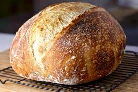
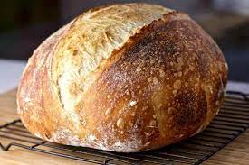
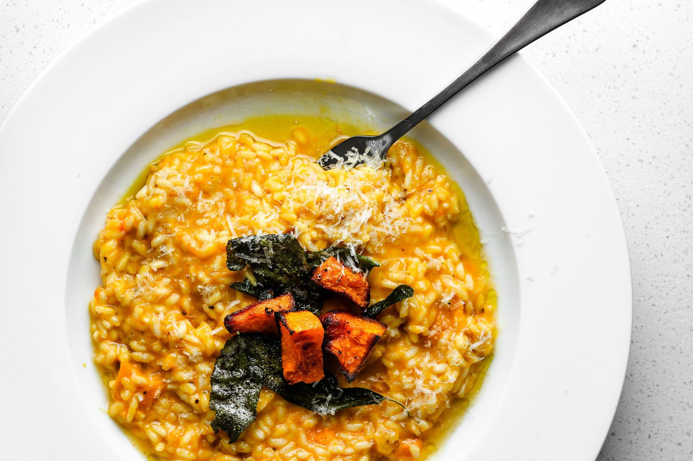
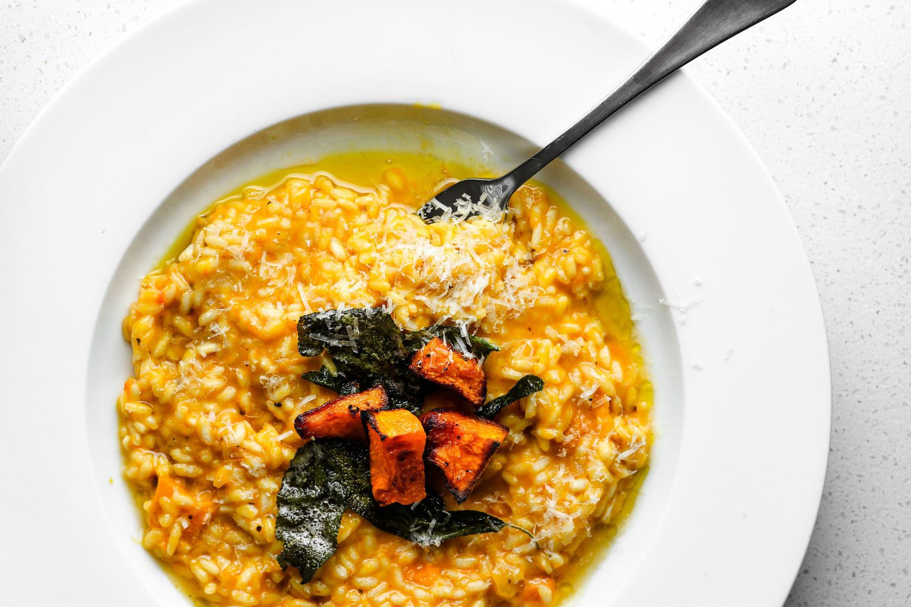
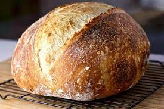
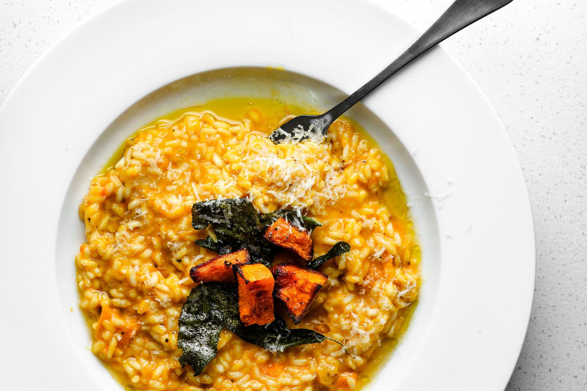

 


Recipe Spotlight: Mediterranean Magic - Grilled Lemon Herb Chicken
Indulge in the vibrant and healthy flavors of the Mediterranean with our Grilled Lemon Herb Chicken recipe...
A Journey Through Exquisite Flavors


Recipe Spotlight: Mediterranean Magic - Grilled Lemon Herb Chicken
Indulge in the vibrant and healthy flavors of the Mediterranean with our Grilled Lemon Herb Chicken recipe...